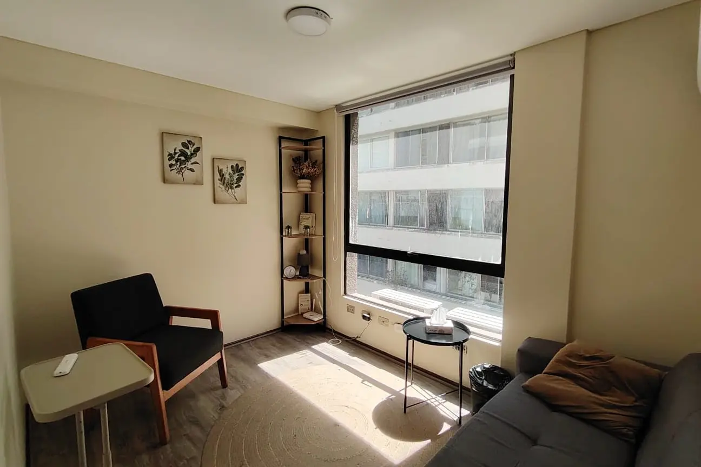
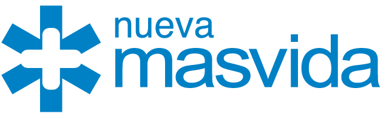

Reg. SIS N° 870794
Aaron Millán
Enfoque en psicodinámica freudiana. Duelos, trastornos de personalidad y adicciones.

Atendemos con boleta electrónica emitida automáticamente. Presencial en Providencia u online.
★★★★★"Excelente psicólogo. Muy amable y te da un espacio de confianza. Gracias por tanto."
★★★★★"Llevo pocas sesiones, pero la experiencia ha sido muy positiva. Es cercano, explica bien las cosas y logra generar un ambiente cómodo y de confianza. Se nota profesional y comprometido. Totalmente recomendable."
★★★★★"Excelente psicólogo, me da mucha confianza trabajar en mis problemas con él. Estoy progresando de muy buena manera gracias a su trabajo como terapeuta y eso me hace muy feliz."
Tres profesionales con enfoques distintos. Elige al que resuene contigo; la logística la manejamos nosotros.
Enfoque en psicodinámica freudiana. Duelos, trastornos de personalidad y adicciones.

Enfoque en trastornos del ánimo y ansiedad. Estrés y dificultades en el desarrollo personal.
Enfoque en terapia DBT y psicología deportiva. Ansiedad, depresión y trastornos anímicos.
Para separar la clínica del dinero, toda la gestión de pagos, boletas y reembolsos pasa por Encuadrado, plataforma certificada y usada por cientos de consultas en Chile. Nosotros solo recibimos la confirmación de que tu sesión está pagada.
El cobro ocurre en una pasarela encriptada de Encuadrado. Faro Terapéutico nunca guarda ni ve tu número de tarjeta o datos bancarios.
Al terminar la sesión se emite una boleta asociada a tu RUT y te llega al correo. No tienes que pedirla ni esperarla.
Si tienes tu Isapre vinculada a Encuadrado, el reembolso se tramita desde la misma plataforma sin cargar documentos manualmente.
De la confirmación de tu hora al reembolso en tu cuenta, el camino más corto posible.
Reservas con el terapeuta que elegiste por WhatsApp o en Encuadrado. La sesión dura 50 minutos.
El pago se hace por la pasarela segura de Encuadrado. Tu boleta electrónica llega al correo al instante.
Adjuntas la boleta en tu Isapre (o lo haces con un clic si la tienes vinculada). El monto vuelve a tu cuenta.
Estimaciones sobre cientos de planes revisados. El monto real depende de tu plan específico.

Nueva MásvidaSi además tienes seguro complementario, podrías terminar pagando tan sólo $3.000 o $5.000 por sesión.
Saber más →Te contactaremos en menos de 24 horas para conversar sobre tu bienestar.
La Concepción 56, a pasos del Metro Pedro de Valdivia. Un espacio accesible y acogedor para tu proceso terapéutico.
Atendemos adolescentes desde los 16 años. Para niños menores, realizamos derivaciones a psicólogos especializados en niños que atienden por Fonasa.
Estamos en La Concepción 56, a pocos metros del Metro Pedro de Valdivia.
Sí, atendemos en modalidad online. Nuestras sesiones son híbridas: si lo solicitas con dos días de anticipación, una sesión agendada como presencial puede realizarse online, y viceversa.
Es una pregunta difícil de responder por chat. Lo ideal es tener una consulta psicológica: una sesión inicial donde evaluamos si tu dolencia puede ser resuelta con nuestro apoyo. Al finalizar esa misma sesión te decimos si es necesario continuar, esperar o buscar otro especialista.
Iniciamos con la consulta psicológica — una sola sesión donde evaluamos si podemos ayudarte. Luego continúan cuatro sesiones de psicodiagnóstico para preparar un plan de tratamiento. Después sigue la aplicación del plan, que puede durar más de seis meses.
Empezamos hablando sobre la confidencialidad del espacio, y te preguntamos qué te trae a buscar ayuda. Te escuchamos atentamente y luego profundizamos con preguntas. Diez minutos antes del cierre te avisamos para que puedas tocar algún tema importante. Las sesiones duran 50 minutos.
Cientos de pacientes confían en nosotros.